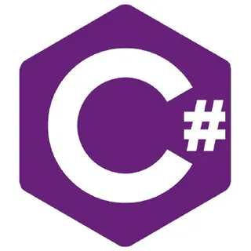

это объектно-ориентированный язык программирования, разработанный инженерами компании Microsoft и заточенный под платформу .NET Framework. Он используется для написания масштабных игр и крупных бизнес-приложений для различных устройств и операционных систем.
1. Скачать Visual Studio Code. Это можно сделать с официального сайта (чтобы на него перейти нажмите кнопку ниже) 2.Установить необходимые расширения. Для программирования на C и C++ понадобятся расширения C/C++ от Microsoft и Code Runner. Их можно загрузить на панели расширений (Ctrl + Shift + X) на левой панели инструментов. 3.Изменить настройки. Нажать на кнопку с шестерёнкой (раздел «Управление»), затем выбрать «Настройки». В строке поиска ввести «Запускать код в терминале» и нажать Enter. Прокрутить вниз до пункта «Code-runner: Запускать в терминале» и убедиться, что чекбокс отмечен (✔). 4.Перезапустить Visual Studio Code. Для этого нужно закрыть и снова открыть программу.
visual studio code